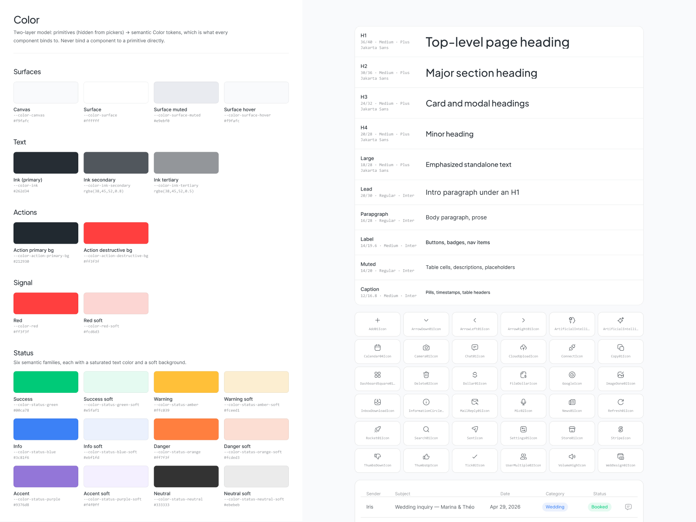

AI Agent · B2B SaaS · Product Design · 2026
46graus
Redefining AI Agents integrated in the photographers workspace
- My role:
- Senior Product Designer, UX Engineer
- Scope:
- Discovery → Redefining agent rules → UI/UX design → Success metrics
- Duration:
- 1 month
- Contract:
- Freelancer
Onboarding TTV
-35%
By removing unnecessary pieces and simplifying AI agent setup
Agent autonomy
22% → 61%
Inquiries handled end-to-end by the agent
Admin work saved
~5 hrs/week
Estimated admin work reduced from photographers
I designed the agent and defined what should be measured, but did not have access to product analytics after handoff.

my process
Understanding
the problem
The client approached me with an existing agent that has very low autonomy within their userbase. The agent setup was part of the onboarding, and most users would abandon in the middle of the process.
The value proposition of this assistant was to:
- Quickly reply leads so they don’t get cold
- Automate the boring part of the photographers workflow
- Automate booking sessions on their agenda
Stakeholder interviews
During initial interview, I understood that the AI agent opportunity was real, many photographers would spend hours weekly on something that could be automated, but they were not sure where to draw the line to automate this part of their users workflow.
- On average, photographers would spend 3-7h per week doing sales, contacting clients, and booking sessions.
- Busy photographers would get 5-10 leads every week
User interviews
During user interviews, I discovered that photographers services are tied to emotional connections and delegating some of the work to an AI agent were not something they were willing to test. They still wanted to delegate part of their work, but wanted to feel in control in some special cases.
Special cases such as weddings, new born, and other personal events were flagged as having direct contact with clients were important. Other events such as sports, business events, and small events were flagged as ok to be automated.
It was also noted that an initial message would be ok to be triggered automatically by the agent, but that it would simply book a call with photographers, and not try to close the deal.
Design audit
During the design audit, I have reviewed the onboarding setup for AI agents and the agent dashboard + chat panel. The onboarding flow to setup agents were heavily relying on multiple groups of inputs to fill services and price specifications, and that was where most of the users were abandoning the feature.
The agent chat page were also a stand alone page, like most chatbot nowadays, with no context on what the user should do with it.
Product Design & AI definitions
46graus existing designs lived in Figma, with their own design system as source of truth. For this design task, the client and I decided to take things further, and create a design system library online connected to their figma design system, and to push this feature rapidly with no-code prototyping tools such as Claude Code.
On the side, me and the client team collaborated to identify and set new AI agent definitions, the new set of rules and constraints that would actually allow photographers to customize it, and be on control when they wanted to be.
Key Challenges:
- Identifying Claude rules so it would follow strictly to design system components, and not deviate and create new ones
- Making sure all prototype designs and its elements were not using any raw value or primitives. Everything should be using semantic tokens.


Key decisions & trade-offs
Where the agent stops
The agent replies, schedules and negotiates on its own based on individual services setups, not as a whole package. It also stops and asks on date conflicts, budgets outside range, and judgment calls (like a discount in a slow month).
- Trade-off: Less automation → more trust. Photographers won't turn on an agent they can't predict.
Price is never invented
The agent autonomy related to prices were strictly tied to defined price tables per service, including a flexibility percentage that was set by the photographers.
- Trade-off: Shipped as a simple yes/no rule, with basic flexibility, making it easier for photographers to trust the AI will not rate it incorrectly.
Smart onboarding process
Most photographers already have a file or website with their services and fees, so we allowed them to add these files to auto-fill the old inputs that were slowing the onboarding process.
- Trade-off: Auto-fill a lot of fields, but would still require manual revision in case some input were not correctly read.
Dashboard + chat, working together
Reworked the dashboard, messages pages, and agent chatbox as two parts of the same screen. Agent chat were no longer a single view page, it was part of whole and would help user contextualize with what they were seeing on the dashboard. What are my latest leads, is there a calendar conflict, …, all supported by visual lists, charts, and cards.
- Trade-off: Less room for each part. Chat and dashboard share one screen, so the layout gets denser.

Results
Onboarding TTV
-35%
By removing unnecessary pieces and simplifying AI agent setup
Adoption
50%
Photographers adopted at least 1 service to be automated.
Agent autonomy
22% → 61%
Inquiries handled end-to-end by the agent
Admin work saved
~5 hrs/week
Estimated admin work reduced from photographers
What I learned
- Where the AI stops matters more than what it can do. Trust is part of the product. Clear limits made the agent more useful, not less.
- Simple rules beat smart ones at launch. A clear yes/no on pricing was easier to explain, test and trust than a flexible model.
- Building interfaces directly with no-code agents is way more effective once the design system component and variables are correctly tied to your agent and claude rules.